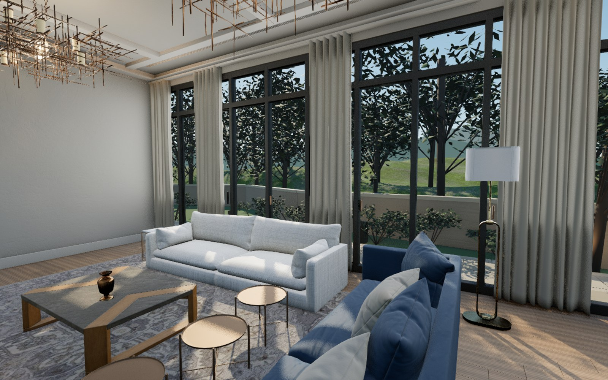

尼高遜山 3 號屋
Mount Nicholson, House 03
香港山頂 · 私人住宅概念研究
查看 3D 模型及漫遊
01 配置筆記
用樓層分開會客和私人活動
地下客廳與飯廳相連，梳化後方留作通往花園趟門的通道。一樓原作睡房的兩個空間改為私人影院和衣帽間；覆核時分別檢查座椅旁的走道，以及中島與櫃門之間的位置。主人套房獨立設於二樓。
- 樓層
- G/F — 2/F
- 範圍
- 室內、庭園及泳池
- 資料性質
- 設計示範，非實測或施工圖
02 空間紀錄
各層模擬畫面
選擇樓層，再選房間。
客廳
沿窗排座，梳化後方留作通往花園的通道。
03 模型覆核
模型與漫遊
先用分層模型看三層的關係，再入屋，沿主樓梯行上私人影院、衣帽間同主人套房。兩者均可在手機或電腦的瀏覽器開啟。